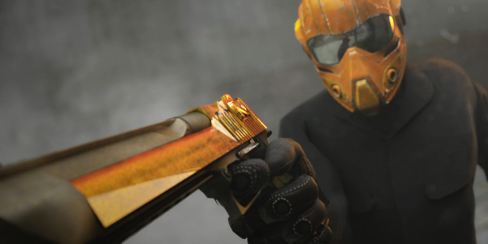
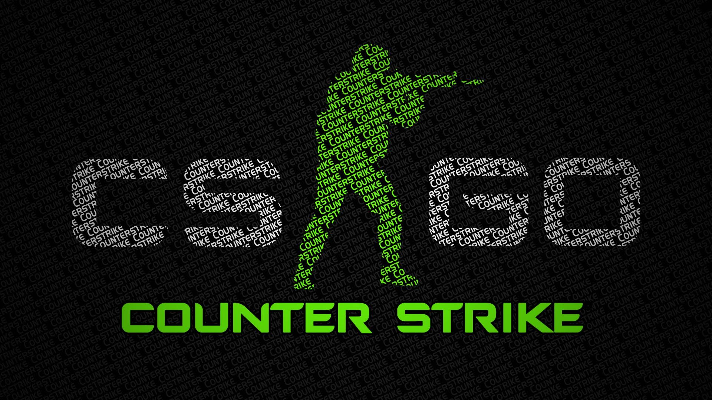

A história de Counter-Strike
Hoje em dia é difícil encontrar alguém que goste de videogames e que nunca tenha jogado ou ao menos visto Counter-Strike, seja em casa ou em uma lan house. Este jogo viciante com regras simples e dinâmicas nasceu de um simples mod, e poucos apostariam que se tornaria um grande sucesso. Mas uma empresa acreditou em seu sucesso: Sim, a toda-poderosa Valve.
O jogo (também conhecido como CS) foi um dos responsáveis pela popularização das LAN Houses em todo o mundo. Além disso, graças a Counter-Strike, uma nova modalidade nasceu (ou pelo menos ganhou um nome) entre as pessoas que jogavam muito e se dedicavam mais que o normal: O esporte eletrônico. Tudo isso porque Counter-Strike foi o pivô de várias disputas entre equipes de jogadores (ou clãs), que com grandes sessões de treinamento, conseguiam conduzir um time com uma organização impressionante, onde para cada membro do time, uma função específica era atribuída. Logo a seguir iremos comentar mais a respeito desse “treinamento intensivo”, que em alguns momentos chegou a ser curioso e até mesmo bizarro.
De um pequeno mod a um sucesso
A história de Counter-Strike começou em meados de 1996, quando um desenvolvedor de jogos vietnamita (naturalizado canadense) chamado Minh Le conheceu o jogo Quake, que na época era um grande sucesso do gênero. Pouco tempo depois, ele conhece também o SDK (kit de desenvolvimento) do jogo, e passa a usar o seu talento para desenvolver alguma coisa relacionada ao jogo de tiro que tanto gostou. 
O Nascimento do CS
Half Life Counter-Strike Depois que Action Quake 2, Minh Le continuou a estudar Ciências da Computação, além de ter seus trabalhos paralelos como desenvolvedor de mods. Dessa vez, o jogo do momento era Half-Life, um lançamento da época. Também foi durante esse período que Minh Le conheceu Jess Cliffe, e juntos começaram a trabalhar em outro mod, que todos nós já conhecemos muito bem: O Counter-Strike. Pela primeira vez na história, um mod de jogo acabaria se tornando muito mais famoso que o próprio jogo do qual ele foi criado. Com o lançamento da primeira versão de Counter-Strike, em 1999, sua popularidade foi crescendo em um ritmo exponencial, a ponto de que Minh Le chegou a se dedicar totalmente ao mod, deixando a sua faculdade de lado. Acham que a decisão de Le foi um erro? Desnecessário dizer que não. Enquanto isso, Jess Cliffe também trabalhava no aprimoramento de Counter-Strike, juntamente com seu amigo Le. Além disso, Cliffe também gravou os comandos de rádio que são usados nas partidas, com sua própria voz, o que foi mais uma característica marcante de CS. O período beta de Counter-Strike foi bem longo, e envolveu muito trabalho. A primeira versão beta aberta de CS foi lançada no dia 19 de junho de 1999, e o jogo começou a ter atualizações semanais. O suporte constante ao jogo, aliado a diversão que ele já proporcionava, foi a fórmula certa para trazer milhões de fãs pela internet. Ao todo foram 19 versões beta do jogo, até que Counter-Strike, versão 1.0 foi lançado no ano 2000.